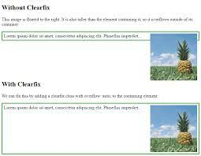
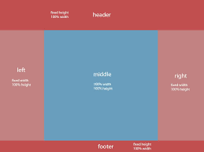
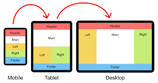

What is a box model in CSS. Give the box-sizing property definition:
The box model is a fundamental concept in CSS that describes how elements are rendered on a webpage. It consists of content, padding, border, and margin. The box-sizing property defines the rendering of the box model. By default, the box-sizing is set to content-box, meaning padding and border are added to the width and height of an element. Changing it to border-box includes the padding and border within the element's specified width and height.
What is a “clearfix hack” and when does it need to be applied
The “clearfix hack” is a technique used to clear floated elements within a container. It is primarily applied when a container does not expand to the height of its floated child elements. By adding a clearfix class to the container and applying CSS rules to clear floats, the container will properly contain its children and prevent layout issues.
What is a “margin collapse” and what are the use cases for margin: auto and negative margin values
Margin collapse is a CSS behavior where the vertical margins of adjacent elements, such as siblings or parent-child, collapse into a single margin. The margin: auto property can be used to center an element horizontally within its parent. Negative margin values can be used to create overlapping effects or adjust the positioning of elements relative to their normal flow in the document.
What was the problem with achieving Holy Grail layout
The Holy Grail layout refers to a webpage layout with a header, footer, and three columns of content, all with variable heights. The problem in the past was achieving this layout with CSS without using complex positioning or fixed heights, especially with the center column expanding vertically while keeping the other columns equal in height.
What are the modern ways to achieve Holy Grail layout
Modern techniques like Flexbox and CSS Grid have made creating the Holy Grail layout much easier. Flexbox allows for flexible layouts where elements can easily be aligned both horizontally and vertically. CSS Grid provides a grid-based layout system that allows for precise placement of elements in rows and columns. These methods offer more control and flexibility compared to older CSS layout models.
